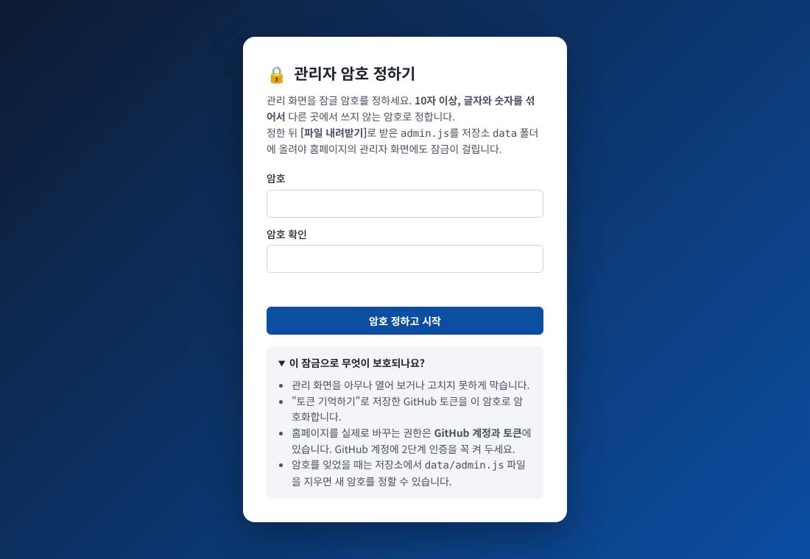
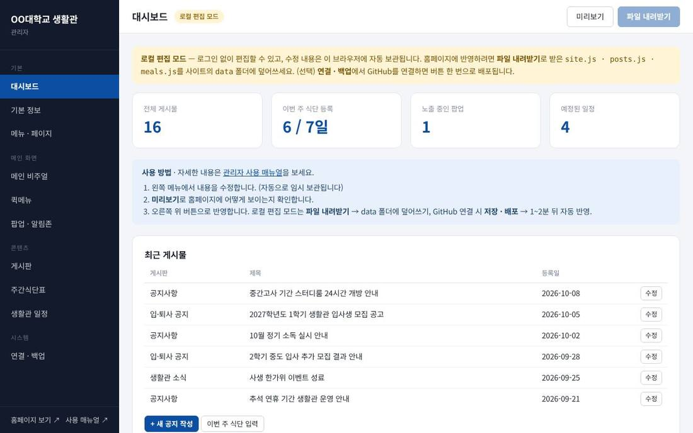
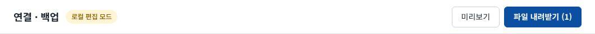
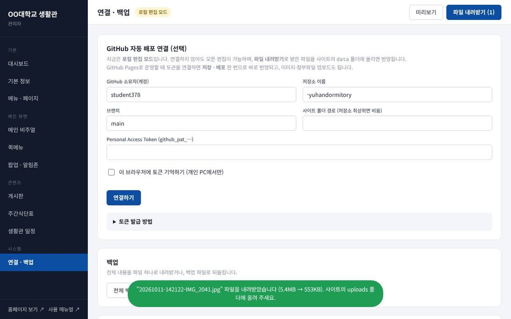

1시작하기
주소
| 구분 | 주소 | 누가 쓰나요 |
|---|---|---|
| 홈페이지 | https://student378.github.io/yuhandormitory/ | 학생·방문자 |
| 관리자 | https://student378.github.io/yuhandormitory/admin.html | 담당 직원 |
| 매뉴얼 | https://student378.github.io/yuhandormitory/manual.html | 담당 직원 |
| 파일 보관소 | https://github.com/student378/yuhandormitory | 담당 직원 (GitHub 계정 필요) |
관리자 주소는 홈페이지 어디에도 링크되어 있지 않습니다. 이 주소를 아는 담당자만 들어오며, 들어올 때 관리자 암호를 입력합니다. 홈페이지를 실제로 바꾸려면 GitHub 저장소에 파일을 올려야 하므로 저장소 권한이 있는 사람만 반영할 수 있습니다. 자세한 내용은 6장 보안을 보세요.
처음 한 번 · 관리자 암호 정하기

- 관리자 주소를 열고 암호를 정합니다. 10자 이상, 글자와 숫자를 섞어서, 다른 사이트에서 쓰지 않는 암호로 정하세요.
- 대시보드에 "관리자 암호가 아직 홈페이지에 등록되지 않았습니다"가 보이면, 오른쪽 위 [파일 내려받기]를 누릅니다.
admin.js가 내려받아집니다. admin.js를 저장소의data폴더에 올립니다. 올리는 방법은 2장 STEP 4와 같습니다.- 1~2분 뒤부터는 어느 PC에서 관리자 주소를 열어도 이 암호를 물어봅니다.
admin.js를 올리기 전까지는 다른 사람이 관리자 주소를 열면 자기 암호를 새로 정해 들어올 수 있습니다. 그 사람의 수정은 그 사람 브라우저에만 남아 홈페이지는 바뀌지 않지만, 바로 올려 두는 것이 안전합니다.화면 구성

- 왼쪽 메뉴: 고칠 영역을 고릅니다. (기본 정보, 메뉴·페이지, 메인 비주얼, 퀵메뉴, 팝업·알림존, 게시판, 주간식단표, 생활관 일정, 연결·백업)
- 미리보기: 고친 내용이 홈페이지에 어떻게 보이는지 새 창으로 보여줍니다. 화면 맨 위에 노란 띠가 있으면 미리보기 화면입니다.
- 파일 내려받기 (숫자): 고친 내용이 담긴 파일을 내려받습니다. 숫자는 바뀐 파일 개수입니다.
- 로컬 편집 모드 표시: 지금 고친 내용이 이 브라우저에만 있다는 뜻입니다.
2홈페이지에 반영하는 방법
전체 흐름
STEP 3 · 파일 내려받기

[파일 내려받기]를 누르면 바뀐 파일만 내려받아집니다. 파일 이름은 정해져 있습니다.
| 파일 | 담긴 내용 |
|---|---|
site.js | 기본 정보, 메뉴·페이지 본문, 메인 비주얼, 퀵메뉴, 팝업·알림존, 생활관 일정 |
posts.js | 게시판과 모든 게시글 |
meals.js | 주간식단표 |
site (1).js처럼 바꿔 저장할 수 있습니다. 올리기 전에 이름이 정확히 site.js · posts.js · meals.js인지 확인하고, 다르면 이름을 고쳐 주세요.STEP 4 · GitHub에 올리기 GitHub 계정으로 로그인한 상태에서
- 저장소의 data 폴더를 엽니다.
- 오른쪽 위 Add file → Upload files를 누릅니다.
- 내려받은 파일을 화면에 끌어다 놓습니다. 같은 이름의 파일은 자동으로 덮어씁니다.
- 아래 Commit changes 칸에 무엇을 고쳤는지 짧게 적고(예:
10월 3주 식단 등록) Commit changes를 누릅니다. - 1~2분 뒤 홈페이지를 새로고침하면 반영되어 있습니다. 바로 안 바뀌면 Ctrl + F5로 강력 새로고침하세요.
(선택) 버튼 한 번으로 반영하기 GitHub 토큰 연결
매번 파일을 올리는 게 번거로우면 관리자 연결 · 백업 메뉴에서 GitHub 토큰을 연결하세요. 버튼 이름이 [저장 · 배포]로 바뀌고, 누르면 STEP 3~4가 자동으로 처리됩니다. 사진·첨부파일도 관리자에서 바로 올라갑니다.

- 토큰 발급: GitHub → Settings → Developer settings → Fine-grained tokens → 이 저장소만 선택 → Contents: Read and write
- "이 브라우저에 토큰 기억하기"를 켜면 토큰을 관리자 암호로 암호화해서 저장합니다. 그래도 개인 PC에서만 켜고, 공용 PC에서는 사용 후 [연결 해제]를 누르세요.
- 클래식 토큰(
ghp_…)은 계정의 모든 저장소에 접근할 수 있어 쓰지 마세요. 관리자도 연결 전에 경고합니다. - 연결 · 백업 화면에서 토큰 만료일을 확인할 수 있습니다. 14일 이내로 남으면 노란 표시가 나옵니다.
- 토큰이 유출되면 GitHub 설정에서 바로 삭제(Revoke)하고 새로 만드세요.
4사진 · 파일 올리기
올리는 순서 로컬 편집 모드 기준
- 사진이 들어갈 칸(배경 이미지, 로고, 팝업 이미지 등)이나 편집기의 [업로드]·[이미지] 버튼을 누르고 사진을 고릅니다.
- 관리자가 사진을 자동으로 줄여서 새 이름(예:
20261011-142122-IMG_2041.jpg)으로 내려받고, 칸에는uploads/20261011-142122-IMG_2041.jpg가 자동으로 채워집니다. - 내려받은 사진을 저장소의 uploads 폴더에 Add file → Upload files로 올립니다. 파일 이름은 바꾸지 마세요.
- 평소처럼 [파일 내려받기] → data 폴더에 올리기를 합니다. 사진과 data 파일은 한 번에 같이 올려도 되지만 폴더가 다르니 각각 올려 주세요.
권장 크기
| 위치 | 권장 크기 (가로×세로) | 형식 | 참고 |
|---|---|---|---|
| 메인 비주얼 | 1920×560 이상, 가로로 긴 사진 | JPG | 가운데·왼쪽이 잘려도 괜찮은 구도. 모바일에서는 양옆이 잘립니다. |
| 알림존 배너 | 800×600 (4:3) | JPG·PNG | 글자를 넣은 배너는 글자를 크게 |
| 팝업 이미지 | 가로 760 (팝업 가로 380의 2배) | JPG·PNG | 세로는 1000 이내 |
| 로고 | 높이 100 내외, 가로형 | PNG (투명 배경) | 400KB 이하로 준비하세요. 넘으면 JPG로 바뀌어 투명 배경이 흰색이 됩니다. |
| 게시글·페이지 사진 | 가로 1200 내외 | JPG | 자동으로 줄어듭니다 |
| 갤러리 대표 이미지 | 4:3 비율 | JPG | 목록에서 4:3으로 잘려 보입니다 |
| 첨부파일 | - | PDF·HWP·XLSX 등 | 파일 하나에 20MB 이하. 가능하면 PDF로 |
5용량 검토
결론: 생활관 홈페이지 규모에서는 문제 없습니다
관리자의 자동 줄이기를 거쳐 사진을 올리면, 1년에 사진을 수백 장 올려도 무료 한도의 몇 %밖에 쓰지 않습니다. 다만 아래 주의할 점 네 가지는 지켜 주세요.
코드 + 예시 데이터
원본 3~6MB 기준
장당 0.5MB 기준
GitHub Pages 무료 한도
| 항목 | 한도 | 이 사이트 예상 | 판단 |
|---|---|---|---|
| 저장소·사이트 크기 | 1GB 권장 | 사진 월 20장 × 0.5MB = 연 120MB | 여유 |
| 월 전송량 | 100GB (권장 한도) | 첫 방문 1회 약 1.5MB → 월 6만 회 방문까지 | 여유 |
| 파일 1개 크기 | 웹 업로드 25MB 저장 불가 100MB | 관리자에서 20MB로 제한 | 안전 |
| 배포 횟수 | 시간당 10회 (권장 한도) | 하루 몇 번 | 여유 |
posts.js 크기 | - | 글 1개 약 1~3KB → 연 200개면 약 0.5MB | 수년 뒤 정리 |
전송량 계산: 메인 화면 첫 방문은 코드·데이터 약 0.3MB와 메인 비주얼 사진 3장(약 1.2MB)입니다. 두 번째 방문부터는 브라우저에 저장된 파일을 다시 쓰므로 훨씬 적습니다. 학생 500명이 매일 들어와도 월 2~3GB 수준입니다.
주의할 점
- 원본 사진을 GitHub에 바로 올리지 마세요. 반드시 관리자의 [업로드]·[이미지] 버튼으로 줄인 파일을 올리세요. 원본 5MB 사진이 메인 비주얼에 3장 있으면 방문할 때마다 15MB를 받아 휴대폰에서 매우 느립니다.
- 올렸다 지운 파일도 용량을 차지합니다. GitHub는 모든 기록을 보관하므로 삭제해도 저장소 크기는 줄지 않습니다. 큰 파일은 신중히 올리세요.
- 게시글은 모든 방문자가 한꺼번에 받습니다. 게시글은
posts.js한 파일에 들어 있습니다. 글이 1,000개를 넘거나 파일이 2MB를 넘으면 [전체 백업 내려받기]로 보관한 뒤 오래된 글을 지우세요. 사진은 따로 저장되므로 글 수에는 영향을 주지 않습니다. - 동영상은 유튜브로. 동영상 파일은 한도를 빠르게 쓰고 재생도 느립니다.
6보안
무엇이 홈페이지를 지키나요
이 홈페이지는 서버 없이 파일만으로 돌아갑니다. 그래서 해킹으로 서버나 DB를 빼앗기는 일은 없고, 홈페이지를 바꿀 수 있는 길은 GitHub 저장소에 파일을 올리는 것 하나뿐입니다. 지켜야 할 열쇠는 아래 세 가지입니다.
| 열쇠 | 뚫리면 | 지키는 방법 |
|---|---|---|
| GitHub 계정 | 홈페이지 전체 변경 가능 | 2단계 인증(2FA) 켜기, 다른 곳과 다른 비밀번호, 협업자 최소화 |
| GitHub 토큰 (연결해 쓰는 경우) | 이 저장소 파일 변경 가능 | 이 저장소만·Contents 권한만·90일 만료로 발급, 공용 PC에 기억하지 않기, 유출 시 즉시 삭제 |
| 관리자 암호 | 관리 화면을 열 수 있음 (홈페이지는 못 바꿈) | 10자 이상, 다른 곳에서 쓰지 않는 암호 |
적용된 보호 장치
- 관리자 암호 잠금: 암호 자체는 저장하지 않고 PBKDF2(31만 회 반복) 해시만
data/admin.js에 저장합니다. 이 파일은 공개 화면에서는 불러오지 않습니다. 5번 틀리면 30초부터 점점 길게 기다려야 합니다. - 토큰 암호화: 기억한 토큰은 관리자 암호로 AES-256 암호화해 저장합니다. 암호를 넣기 전에는 토큰을 꺼낼 수 없습니다.
- 자동 잠금: 30분 동안 조작이 없으면 잠깁니다.
- 본문 정리: 게시글·페이지·팝업 내용에서 스크립트, 위험한 링크(
javascript:), 허용하지 않은 외부 화면(iframe)을 자동으로 지웁니다. 다른 사이트에서 복사해 붙여도 방문자 브라우저에서 코드가 실행되지 않습니다. - 외부 화면 제한: 지도·영상은 유튜브, 구글·네이버·카카오 지도만 넣을 수 있고, 넣은 화면이 우리 홈페이지를 다른 곳으로 옮기지 못하게 막습니다.
- 보안 정책(CSP): 모든 화면이 우리 사이트의 프로그램 파일과 허용한 글꼴·지도·영상만 쓰도록 브라우저에 지시합니다.
- 업로드 형식 제한: SVG·HTML·JS처럼 실행될 수 있는 파일은 올릴 수 없습니다.
- 가로채기 방지: 다른 사이트가 관리 화면을 자기 페이지에 끼워 넣어 클릭을 가로채지 못하게 합니다.
정기 점검 목록
| 주기 | 할 일 |
|---|---|
| 처음 한 번 | GitHub 계정 2단계 인증 켜기 · 관리자 암호 정하고 admin.js 올리기 · 저장소 Settings → Pages에서 Enforce HTTPS 켜기 |
| 매달 | 저장소 Commits 기록에서 모르는 수정이 없는지 보기 · Settings → Collaborators에 필요한 사람만 있는지 보기 |
| 토큰 만료 전 | 새 토큰 발급 → 관리자에서 다시 연결 → 옛 토큰 삭제 |
| 담당자가 바뀔 때 | 관리자 암호 변경(연결 · 백업 → 보안), 옛 담당자의 협업자 권한·토큰 삭제 |
문제가 생겼을 때
- 모르는 수정이 보이면: GitHub 비밀번호를 바꾸고, 쓰는 토큰을 모두 삭제(Settings → Developer settings → Tokens → Revoke)합니다.
- 저장소 History에서 문제 전 버전의 파일을 내려받아 다시 올려 되돌립니다.
- 관리자 암호도 바꾸고, 새
admin.js를 올립니다.
data/admin.js 파일을 지우면(파일 열기 → 휴지통 아이콘 → Commit) 관리자를 열 때 새 암호를 정할 수 있습니다. 새 암호를 정한 뒤 admin.js를 다시 올리세요. 기억해 둔 토큰은 옛 암호로 잠겨 있으므로 다시 연결해야 합니다.7문제 해결
GitHub에 올렸는데 홈페이지가 안 바뀌어요.
site.js · posts.js · meals.js인지, data 폴더 안에 올렸는지 확인하세요. 저장소의 Actions 탭에서 배포가 끝났는지(초록 체크)도 볼 수 있습니다.홈페이지에 "데이터를 불러오지 못했습니다"가 떠요.
사진이 엑스박스로 나오거나 미리보기에서 안 보여요.
uploads 폴더에 올리지 않았거나, 올리면서 파일 이름이 바뀐 경우입니다. 칸에 적힌 이름(uploads/ 뒤 부분)과 저장소에 올라간 파일 이름이 글자 하나까지 같은지 확인하세요.어제 고친 내용이 관리자에 없어요.
잘못 올렸어요. 되돌릴 수 있나요?
팝업이 안 떠요.
한글 파일에서 붙여넣었더니 글꼴이 이상해요.
관리자 주소를 학생이 알면 위험하지 않나요?
관리자 암호를 잊었어요.
data/admin.js를 지우고 1~2분 뒤 관리자를 열면 새 암호를 정할 수 있습니다. 자세한 내용은 6장을 보세요.암호를 바꿨는데 다른 PC에서는 옛 암호로 열려요.
admin.js가 홈페이지에 올라가야 다른 PC에도 적용됩니다. 로컬 편집 모드라면 [파일 내려받기]로 받은 admin.js를 data 폴더에 올리고, GitHub 연결 상태라면 [저장 · 배포]를 누르세요. 반영까지 1~2분, 브라우저 캐시 때문에 최대 10분 정도 걸릴 수 있습니다.